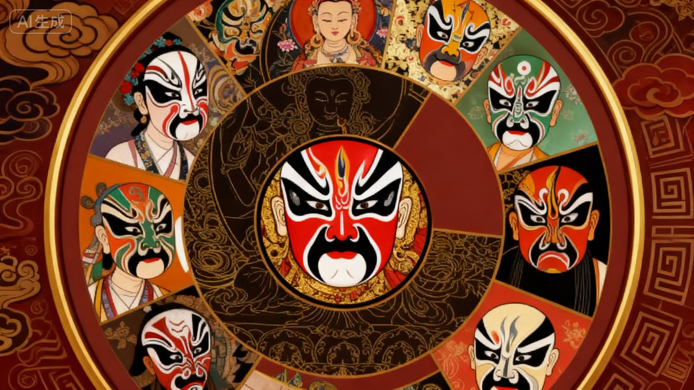
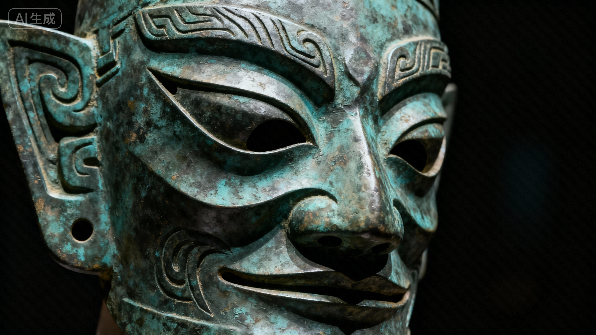
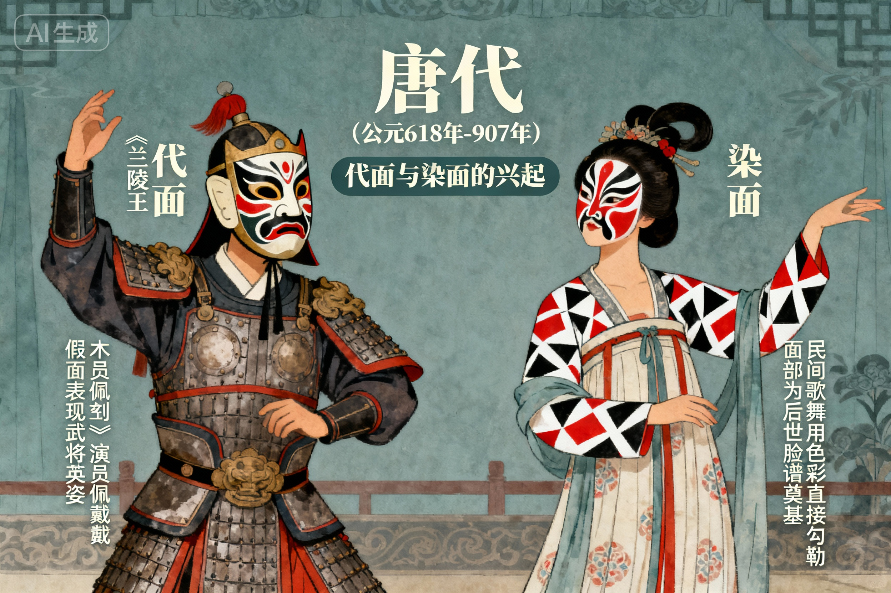
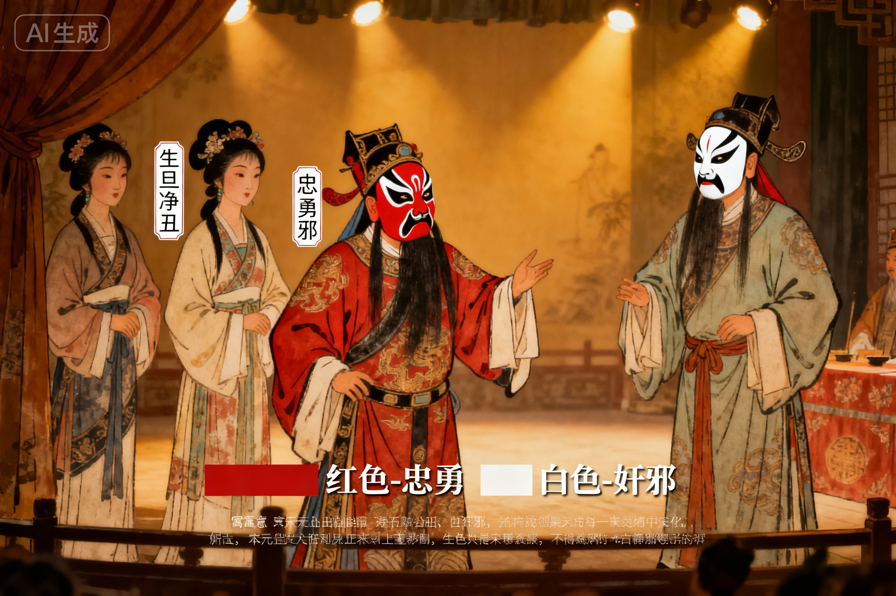
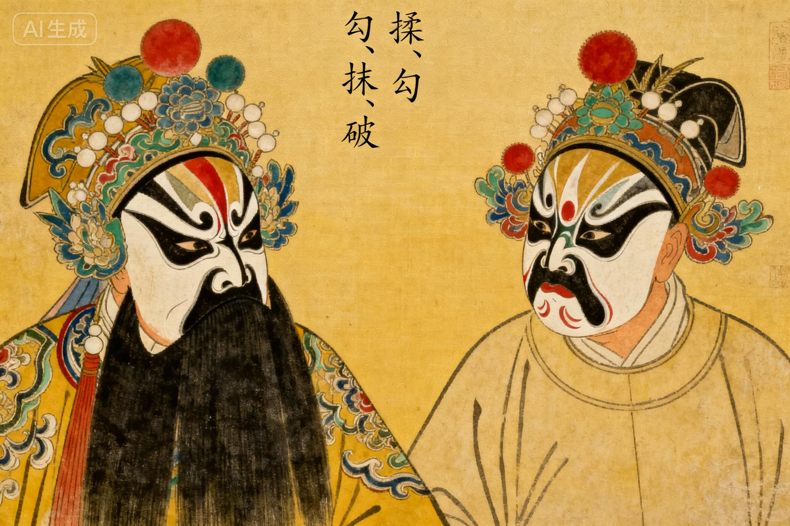
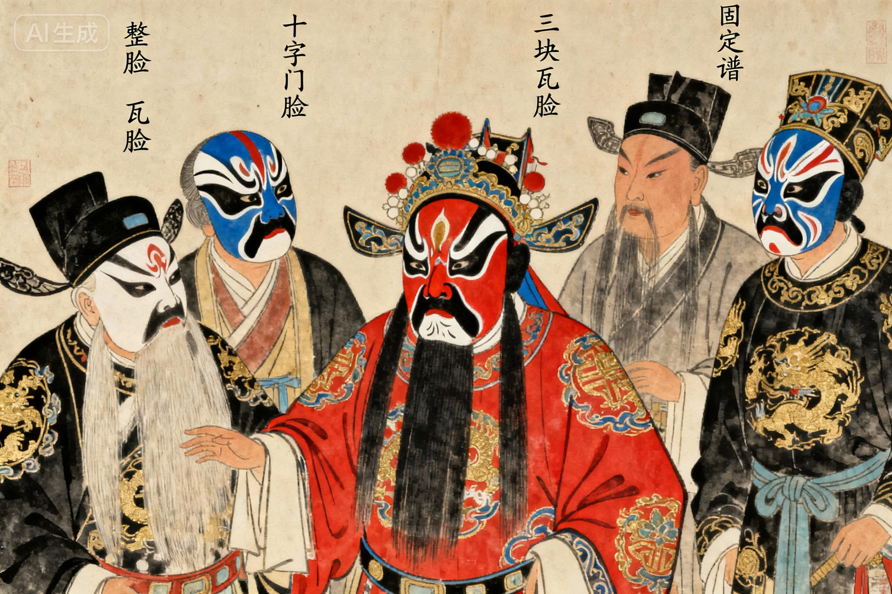
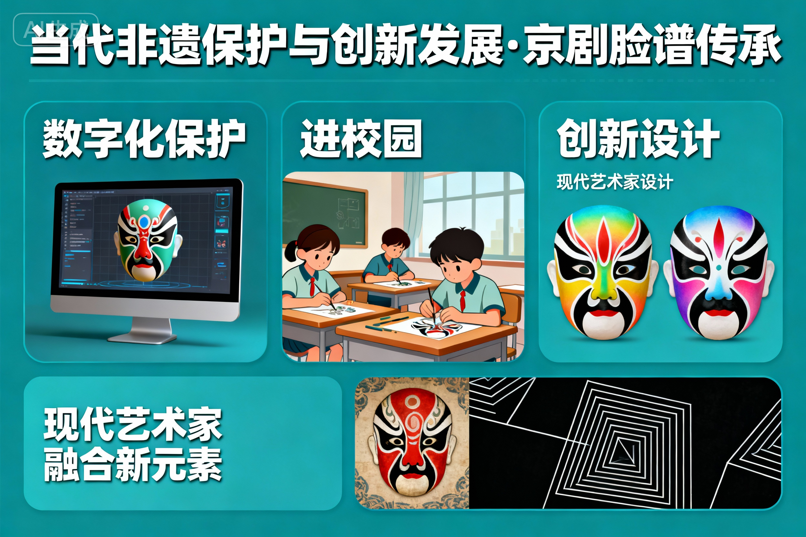

沿着时间脉络，探寻京剧脸谱从雏形到成熟的精彩历程
远古时期，"傩戏"作为驱邪祈福的仪式表演，舞者佩戴木质或青铜面具，这是脸谱最早的形态。面具造型夸张，色彩鲜明，已具备"以形表意"的特征。

山西侯马出土的先秦傩戏面具，现存于国家博物馆

唐代《兰陵王》剧照，演员佩戴"代面"面具表演
唐代戏曲成熟，出现"代面"（面具）和"染面"（直接面部彩绘）两种形式。《兰陵王》中，演员佩戴假面表现武将英姿；而民间歌舞则开始用色彩直接在面部勾勒，为后世脸谱奠定基础。
宋元杂剧繁荣，脸谱从简单彩绘发展为有固定程式的化妆艺术。不同角色（生旦净丑）开始有明确的面部色彩区分，如净角多用红色表示忠勇，白色表示奸邪，初步形成"色彩寓意"体系。

山西洪洞元代杂剧壁画中的脸谱形象

明代昆曲《牡丹亭》中的脸谱造型
明代昆曲鼎盛，脸谱工艺进一步精细化。不仅色彩寓意固定，更发展出"揉、勾、抹、破"等多种绘制技法，线条更加流畅，图案更具装饰性，形成了"花脸"（净角）的独特风格。
清代京剧形成并成为国剧，脸谱艺术达到巅峰。形成了"整脸、三块瓦脸、十字门脸"等固定谱式，色彩与图案严格对应角色性格，同时诞生了钱派、郝派等多个脸谱流派，风格各异。

清代京剧《长坂坡》赵云脸谱，现藏于故宫博物院

当代京剧演员传承脸谱技艺，2006年被列入国家级非遗
京剧脸谱被列入国家级非物质文化遗产，通过数字化保护、进校园、创新设计等方式传承。现代艺术家在传统基础上融入新元素，使这一古老艺术在当代焕发新活力。